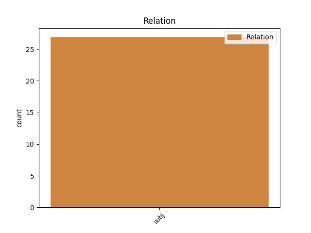
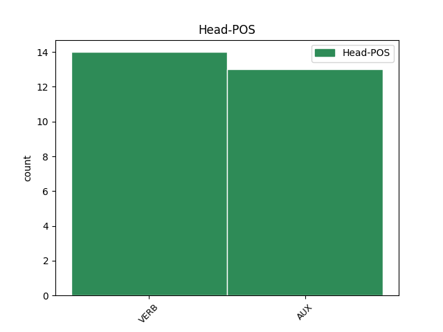
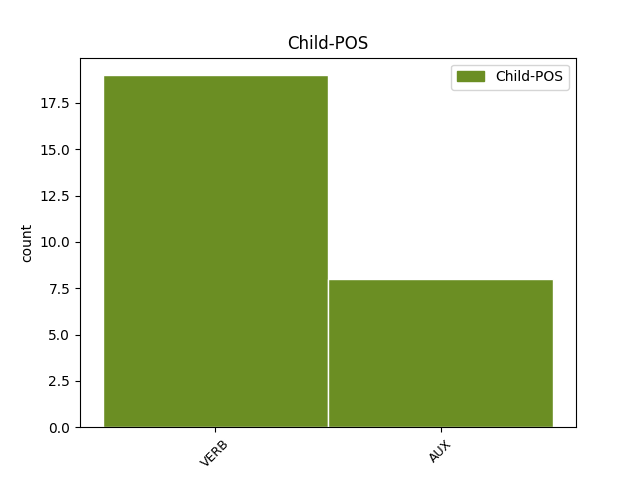

Distribution of features within this leaf



Agreement Rules sorted by frequency.
- When the dependent token is the subject(subj) of the head token, and the dependent token is VERB.
1 Šajā _ _ _ _ 0 _ _ _
2 kontekstā _ _ _ _ 0 _ _ _
3 ir būt AUX vcnipii30an Evident=Fh|Mood=Ind|Person=3|Polarity=Pos|Tense=Pres|VerbForm=Fin|Voice=Act 0 _ _ _
4 konstatējams _ _ _ _ 0 _ _ _
5 , _ _ _ _ 0 _ _ _
6 kā _ _ _ _ 0 _ _ _
7 birokrātiska _ _ _ _ 0 _ _ _
8 institūcija _ _ _ _ 0 _ _ _
9 nodrošina nodrošināt VERB vmnipt330an Evident=Fh|Mood=Ind|Person=3|Polarity=Pos|Tense=Pres|VerbForm=Fin|Voice=Act 3 subj _ LvtbNodeId=a-z107-p172s3w9
10 gan _ _ _ _ 0 _ _ _
11 savu _ _ _ _ 0 _ _ _
12 resursu _ _ _ _ 0 _ _ _
13 pietiekamību _ _ _ _ 0 _ _ _
14 , _ _ _ _ 0 _ _ _
15 gan _ _ _ _ 0 _ _ _
16 darbības _ _ _ _ 0 _ _ _
17 efektivitāti _ _ _ _ 0 _ _ _
18 ar _ _ _ _ 0 _ _ _
19 konkrētas _ _ _ _ 0 _ _ _
20 rīcībpolitikas _ _ _ _ 0 _ _ _
21 noteikšanu _ _ _ _ 0 _ _ _
22 par _ _ _ _ 0 _ _ _
23 prioritāru _ _ _ _ 0 _ _ _
24 politikas _ _ _ _ 0 _ _ _
25 plānošanas _ _ _ _ 0 _ _ _
26 dokumentos _ _ _ _ 0 _ _ _
27 , _ _ _ _ 0 _ _ _
28 pēc _ _ _ _ 0 _ _ _
29 kuriem _ _ _ _ 0 _ _ _
30 vadās _ _ _ _ 0 _ _ _
31 lēmumu _ _ _ _ 0 _ _ _
32 pieņēmēji _ _ _ _ 0 _ _ _
33 . _ _ _ _ 0 _ _ _
1 Šajā _ _ _ _ 0 _ _ _
2 gadījumā _ _ _ _ 0 _ _ _
3 par _ _ _ _ 0 _ _ _
4 applūstošajām _ _ _ _ 0 _ _ _
5 teritorijām _ _ _ _ 0 _ _ _
6 nav būt AUX vcnipii30ay Evident=Fh|Mood=Ind|Person=3|Polarity=Neg|Tense=Pres|VerbForm=Fin|Voice=Act 0 _ _ _
7 skaidrs _ _ _ _ 0 _ _ _
8 , _ _ _ _ 0 _ _ _
9 kura _ _ _ _ 0 _ _ _
10 ir būt AUX vcnipii30an Evident=Fh|Mood=Ind|Person=3|Polarity=Pos|Tense=Pres|VerbForm=Fin|Voice=Act 6 subj _ LvtbNodeId=a-p267-p2s3w10
11 tā _ _ _ _ 0 _ _ _
12 vērtība _ _ _ _ 0 _ _ _
13 , _ _ _ _ 0 _ _ _
14 kas _ _ _ _ 0 _ _ _
15 ir _ _ _ _ 0 _ _ _
16 jāizsargā _ _ _ _ 0 _ _ _
17 . _ _ _ _ 0 _ _ _
Disagree Examples:
1 Kopti _ _ _ _ 0 _ _ _
2 un _ _ _ _ 0 _ _ _
3 veseli _ _ _ _ 0 _ _ _
4 nagi _ _ _ _ 0 _ _ _
5 ir _ _ _ _ 0 _ _ _
6 svarīgs _ _ _ _ 0 _ _ _
7 faktors _ _ _ _ 0 _ _ _
8 , _ _ _ _ 0 _ _ _
9 lai _ _ _ _ 0 _ _ _
10 rokas _ _ _ _ 0 _ _ _
11 būtu _ _ _ _ 0 _ _ _
12 vizuāli _ _ _ _ 0 _ _ _
13 pievilcīgas _ _ _ _ 0 _ _ _
14 , _ _ _ _ 0 _ _ _
15 tāpēc _ _ _ _ 0 _ _ _
16 ir būt AUX vcnipii30an Evident=Fh|Mood=Ind|Person=3|Polarity=Pos|Tense=Pres|VerbForm=Fin|Voice=Act 0 _ _ _
17 svarīgi _ _ _ _ 0 _ _ _
18 , _ _ _ _ 0 _ _ _
19 kā _ _ _ _ 0 _ _ _
20 mēs _ _ _ _ 0 _ _ _
21 tās _ _ _ _ 0 _ _ _
22 kopjam kopt VERB vmnipt11pan Evident=Fh|Mood=Ind|Number=Plur|Person=1|Polarity=Pos|Tense=Pres|VerbForm=Fin|Voice=Act 16 subj _ LvtbNodeId=a-c60-p1s7w22|SpaceAfter=No
23 . _ _ _ _ 0 _ _ _
1 Izrādās izrādīties VERB vmyipi330an Evident=Fh|Mood=Ind|Person=3|Polarity=Pos|Reflex=Yes|Tense=Pres|VerbForm=Fin|Voice=Act 0 _ _ _
2 , _ _ _ _ 0 _ _ _
3 esmu būt AUX vcnipii1san Evident=Fh|Mood=Ind|Number=Sing|Person=1|Polarity=Pos|Tense=Pres|VerbForm=Fin|Voice=Act 1 subj _ LvtbNodeId=a-d198-p75s6w3
4 rūpīgi _ _ _ _ 0 _ _ _
5 apsegta _ _ _ _ 0 _ _ _
6 līdz _ _ _ _ 0 _ _ _
7 kaklam _ _ _ _ 0 _ _ _
8 . _ _ _ _ 0 _ _ _
1 Šobrīd _ _ _ _ 0 _ _ _
2 pilnā _ _ _ _ 0 _ _ _
3 sparā _ _ _ _ 0 _ _ _
4 notiek notikt VERB vmnipi130an Evident=Fh|Mood=Ind|Person=3|Polarity=Pos|Tense=Pres|VerbForm=Fin|Voice=Act 0 _ _ _
5 Ziemassvētku _ _ _ _ 0 _ _ _
6 akcija _ _ _ _ 0 _ _ _
7 " _ _ _ _ 0 _ _ _
8 aizej aiziet VERB vmnm0i12san Mood=Imp|Number=Sing|Person=2|Polarity=Pos|VerbForm=Fin|Voice=Act 4 subj _ LvtbNodeId=a-d27-p21s3w8
9 kopā _ _ _ _ 0 _ _ _
10 ar _ _ _ _ 0 _ _ _
11 2052. _ _ _ _ 0 _ _ _
12 gadu _ _ _ _ 0 _ _ _
13 ! _ _ _ _ 0 _ _ _
14 " _ _ _ _ 0 _ _ _
15 , _ _ _ _ 0 _ _ _
16 un _ _ _ _ 0 _ _ _
17 , _ _ _ _ 0 _ _ _
18 domājams _ _ _ _ 0 _ _ _
19 , _ _ _ _ 0 _ _ _
20 ar _ _ _ _ 0 _ _ _
21 parastās _ _ _ _ 0 _ _ _
22 Ziemassvētku _ _ _ _ 0 _ _ _
23 depresijas _ _ _ _ 0 _ _ _
24 atbalstu _ _ _ _ 0 _ _ _
25 cilvēku _ _ _ _ 0 _ _ _
26 populācija _ _ _ _ 0 _ _ _
27 kārtējo _ _ _ _ 0 _ _ _
28 reizi _ _ _ _ 0 _ _ _
29 būtiski _ _ _ _ 0 _ _ _
30 samazināsies _ _ _ _ 0 _ _ _
31 . _ _ _ _ 0 _ _ _
1 Mūsu _ _ _ _ 0 _ _ _
2 īstenības _ _ _ _ 0 _ _ _
3 vējš _ _ _ _ 0 _ _ _
4 šūpo _ _ _ _ 0 _ _ _
5 Tavu _ _ _ _ 0 _ _ _
6 kuli _ _ _ _ 0 _ _ _
7 , _ _ _ _ 0 _ _ _
8 Tev _ _ _ _ 0 _ _ _
9 patīk _ _ _ _ 0 _ _ _
10 , _ _ _ _ 0 _ _ _
11 Tev _ _ _ _ 0 _ _ _
12 itin _ _ _ _ 0 _ _ _
13 labi _ _ _ _ 0 _ _ _
14 patīk patikt VERB vmnipi130an Evident=Fh|Mood=Ind|Person=3|Polarity=Pos|Tense=Pres|VerbForm=Fin|Voice=Act 0 _ _ _
15 , _ _ _ _ 0 _ _ _
16 kā _ _ _ _ 0 _ _ _
17 esi būt AUX vcnipii2san Evident=Fh|Mood=Ind|Number=Sing|Person=2|Polarity=Pos|Tense=Pres|VerbForm=Fin|Voice=Act 14 subj _ LvtbNodeId=a-d78-p17s5w17
18 iekārtojies _ _ _ _ 0 _ _ _
19 , _ _ _ _ 0 _ _ _
20 jo _ _ _ _ 0 _ _ _
21 katrs _ _ _ _ 0 _ _ _
22 rāpotājs _ _ _ _ 0 _ _ _
23 , _ _ _ _ 0 _ _ _
24 katrs _ _ _ _ 0 _ _ _
25 cilvēks _ _ _ _ 0 _ _ _
26 , _ _ _ _ 0 _ _ _
27 kurš _ _ _ _ 0 _ _ _
28 lielāko _ _ _ _ 0 _ _ _
29 daļu _ _ _ _ 0 _ _ _
30 savas _ _ _ _ 0 _ _ _
31 dzīves _ _ _ _ 0 _ _ _
32 pavadījis _ _ _ _ 0 _ _ _
33 , _ _ _ _ 0 _ _ _
34 ēdot _ _ _ _ 0 _ _ _
35 lētos _ _ _ _ 0 _ _ _
36 konservus _ _ _ _ 0 _ _ _
37 un _ _ _ _ 0 _ _ _
38 no _ _ _ _ 0 _ _ _
39 miskastēm _ _ _ _ 0 _ _ _
40 izzvejotus _ _ _ _ 0 _ _ _
41 aizkostus _ _ _ _ 0 _ _ _
42 ābolus _ _ _ _ 0 _ _ _
43 , _ _ _ _ 0 _ _ _
44 Tavās _ _ _ _ 0 _ _ _
45 acīs _ _ _ _ 0 _ _ _
46 ir _ _ _ _ 0 _ _ _
47 nekaitīgi _ _ _ _ 0 _ _ _
48 mīļš _ _ _ _ 0 _ _ _
49 . _ _ _ _ 0 _ _ _
1 No _ _ _ _ 0 _ _ _
2 kā _ _ _ _ 0 _ _ _
3 es _ _ _ _ 0 _ _ _
4 drusku _ _ _ _ 0 _ _ _
5 baidos baidīties VERB vmyipi31san Evident=Fh|Mood=Ind|Number=Sing|Person=1|Polarity=Pos|Reflex=Yes|Tense=Pres|VerbForm=Fin|Voice=Act 7 subj _ LvtbNodeId=a-p3762-p32s4w5|SpaceAfter=No
6 , _ _ _ _ 0 _ _ _
7 ir būt AUX vcnipii30an Evident=Fh|Mood=Ind|Person=3|Polarity=Pos|Tense=Pres|VerbForm=Fin|Voice=Act 0 _ _ _
8 tas _ _ _ _ 0 _ _ _
9 , _ _ _ _ 0 _ _ _
10 vai _ _ _ _ 0 _ _ _
11 nodošanas _ _ _ _ 0 _ _ _
12 / _ _ _ _ 0 _ _ _
13 pieņemšanas _ _ _ _ 0 _ _ _
14 procedūrā _ _ _ _ 0 _ _ _
15 viss _ _ _ _ 0 _ _ _
16 būs _ _ _ _ 0 _ _ _
17 pieņemams _ _ _ _ 0 _ _ _
18 . _ _ _ _ 0 _ _ _